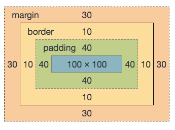

写法：在标签中，写一个style的属性比如:style="....."在引号当中，写相应的css样式
缺点：不利于维护，不利于代码重用
优点：优先级最高
写法：在head标签里，写一个style的标签，在标签中，通过选择器来控制样式
选择器：标签名选择器
写法：div{...css的样式}
写法：在head标签里，写一个link标签，用来关联一个css的文件，在css文件中，通过选择器来控 制样式
优点：利于代码重用
缺点：需要加载服务器
写法：首先在相应标签中设置一个ID的属性，如：id="id名"
在样式表中，通过#+id名{...css的样式}
温馨小提示：
id名要以英文字母开头
id名不能重复，是唯一的
写法：首先在相应标签中设置一个class的属性，如：class="class名"在样式表中，通过.+class名{……css的样式……}
温馨小提示
class名以英文字母开头
标签名选择器
优点：加载速度快，不需要去请求服务器
缺点：不利于代码重用
border-width 边框宽度
border-style 边框样式
solid 实线
dashed 虚线
dotted 点线 （点线IE6不认）
复合写法
border: border-width border-style border-color;
border-color 边框颜色 英文单词 十六进制 rgb
注意：边框样式书写顺序可以颠倒，不过要便于理解
padding的含义就是： 内边距 内填充
padding-top 上内边距
padding-right 右内边距
padding-bottom 下内边距
padding-left 左内边距
padding:10px; 一个值代表 上右下左都是10px
padding:10px 20px; 两个值 第一个值代表上下 第二个值代表左右
padding:10px 20px 40px; 三个值 第一个值代表上 第二个值代表左右 第三个值代表下
padding:10px 20px 40px 80px; 4个值 第一个值代表上 第二个值代表右 第三个值代表下 第四个值代表左
margin: 外边距，盒子以外的距离
margin-top 上外边距
margin-right 右外边距
margin-bottom 下外边距
margin-left 左外边距
margin:10px; 一个值代表 上右下左都是10px
margin:10px 20px; 两个值 第一个值代表上下 第二个值代表左右
margin:10px 20px 40px; 三个值 第一个值代表上 第二个值代表左右 第三个值代表下
margin:10px 20px 40px 80px; 4个值 第一个值代表上 第二个值代表右 第三个值代表下 第四个值代表左
标签的嵌套 确定父子级关系
规避方法：
1.给父级加边框
2.给父级加overflow:hidden;
3.不要用margin-top，父级的padding-top代替
盒模型空间大小 ：
border-top + padding-top + height + padding-bottom + border-bottom
border-left + padding-left + width + padding-right + border-right

font-size 文字大小（一般均为偶数）
font-family 中文 SimSun (宋体) SimHei (黑体) Microsoft YaHei (微软雅黑) STKaiti (华文楷体) 英文 Arial Georgia Helvetica sans-
color 文字颜色（英文、rgb、十六位进制色彩值）
line-height 行高 (具体的数值)
text-align 文本对齐方式 （left center right）
text-indent 首行缩进（em缩进字符或者是具体的数值）
font-weight 文字着重 （normal bold bolder 100~900）
font-style 文字倾斜 (normal italic oblique)
text-decoration 文本修饰 (none underline overline line-through)
letter-spacing 字母间距 (具体的数值)
word-spacing 单词间距（以空格为解析单位）
background-color background-image background-position background-repeat
font-style | font-weight | font-size/line-height | font-family；
font:normal 19px/36px "Microsoft yahei";
写法:＜title＞＜/title＞
双标签
语义：网页标题
权重最大
写法:＜div＞＜/div＞
双标签
语义：无意义
默认样式：无
h1~h6
写法：＜h1＞＜/h1＞＜h2＞＜/h2＞＜h3＞＜/h3＞＜h4＞＜/h4＞＜h5＞＜/h5＞＜h6＞＜/h6＞
双标签
语义：无意义
默认样式：无
写法：＜p＞＜/p＞
双标签
语义：段落
默认样式：margin
p标签在嵌套时不要包含块元素的标签
注意：权重 ：h1 最大 h2 次之 h3更次之 。 h1页面中最好不要超过一个,h2页面中最好不要超过12个,h3之后的h标签就随便了
写法：＜p＞＜/p＞
双标签
语义：列表项
默认样式：list-style-type
写法：＜p＞＜/p＞
双标签
语义：有序列表
默认样式：margin padding-left list-style-type
dl dt dd
写法：
双标签
语义：自定义列表
默认样式：margin
写法：
双标签
语义：列表标题
默认样式：无
写法：
双标签
语义：列表说明
默认样式：margin-left
1.默认是父级100%的宽
2.支持所有CSS样式
3.独占一行
1.同属性的标签排在同一排
2.内容撑开宽度
3.不支持宽高，不支持上下的padding和margin
4.代码换行被解析 间距大小取决于父级的font-size的大小
内联块属性 特性：
1.同属性的标签排在同一排
2.内容撑开宽度
3.支持所有的css的样式
4.代码换行被解析，间距大小取决于父级的font-size大小
双标签
语义：超链接
默认样式：color text-decoration cursor
温馨提示：
href属性中
1.如果要链接一个网站地址的话，一定要加 http://
2. # 代表链接到当前页
target
_self 默认 在当前窗口打开
_blank 在新窗口打开
写法：img src="图片的路径地址" alt="图片说明">
单标签
语义：图片
默认样式：低版本浏览器中有默认的边框
温馨小提示：
1.路径地址一定要正确
2.alt属性一定要写
显示为无：display:none;
块属性 display:block;
内联属性：
内联 display:inline;
内联块 display:inline-block;
浮动： float
1.浮动的元素排在同一排
2.浮动的元素内容撑开宽度
3.浮动的元素支持所有的css样式
4.浮动的元素脱离文档流
5.浮动的元素提升层级半级
hidden 溢出隐藏
auto 溢出出现滚动条
scroll 出现滚动条的位置
margin:0 auto;
伪类：就是CSS一些元素身上的特殊属性
:hover 鼠标停留
:after 在元素内容之后插入一些内容
其实就是使元素脱离文档流，按照一定的方式排列，遇到相邻的浮动元素或者父级的边界停下来。
BFC 就是清浮动 是用来处理浮动元素脱离文档流的问题
弊端：左右的margin:0 auto; 会失效；
2.父级加display:inline-block
弊端：左右的margin:0 auto; 会失效；
(如果需要让元素居中可以给父级加text-align:center)
弊端：扩展性不好
写法：
作用：换行
clear 元素的某一方向不允许出现其他的浮动元素
left right both 推荐使用one
温馨小提示
不符合W3C规范 违反结构 样式 行为 三者分离原则
:after{content:"";display:block; clear:both;}
温馨提示：目前主流方法。建议使用
定位： 把一个元素 按照一定的方式 定到页面的某一个位置
定位： position
针对自己本身的位置进行定位
针对有定位的父级的原点进行定位，如果父级没有定位，会找父级的父级身上有没有定位，如果有，针对父级的父级的原点进行定位，以此类推，如果都没有定位，针对document进行定位
温馨小提示：
绝对定位即使没有初始值，也一定要设置值 例子：left:0px; top:0px;
针对页面窗口进行定位
温馨提示
IE6 不支持固定定位
偏移量： Left top right bottom
温馨提示： left top 比 right bottom 的优先级要高
1.不影响元素本身的特性
2.不使元素脱离文档流
3.提升层级
4.无法触发BFC
5.针对自己本身进行定位
1.会使元素完全脱离文档流
2.内容撑开宽度和高度
3.使元素支持所有的CSS样式
4.提升层级
5.绝对定位要和相对定位配合使用
6.如果有定位父级，针对定位父级发生偏移，没有定位父级，针对document进行偏移
7.如果绝对定位的子级有浮动，可以省略清浮动的操作
1.不兼容IE6
2.针对窗口进行定位
3.如果固定定位的子级有浮动，可以省略清浮动的操作
1.只有定位的盒子才有层级
2.数值越大，层级越高
是由 id选择器 class选择器 标签名选择器组合而成
id选择器 10000
class选择器 100
标签名选择器 1
层级高就会压制层级低的
兼容性：页面在不同的浏览器中可能会显示不同。
在IE6下，子级的宽度会撑开父级设置好的宽度
温馨小提示：盒模型的计算一定要精确
否则IE浏览器可能会显示不同
ie6中，元素浮动，如果宽度需要内容撑开，需要给里面的块元素都添加浮动才可以
在IE6.7下 元素要通过浮动排在同一排，就需要给这行元素都加浮动
注意标签的嵌套规则
在IE6下元素的高度如果小于19px的时候，会被当成19px来处理
解决方法：overflow:hidden;
在IE6下不支持1px的dotted边框样式
解决方法：切背景平铺
haslayout
在IE下大部分兼容性都是因为haslayout属性的触发问题，尽量触发haslayout属性，可以减少很多IE下的兼容下的问题。
在IE下父级有边框的时候，子元素的margin会失效
解决方法：触发父级的haslayout属性
ie6下双边距的bug
在ie6下，块元素有浮动有横向的margin的值的时候，横向的margin的值会扩大两倍
margin-left 一行中左侧的第一个元素有双边距
margin-right 一行中右侧的第一个元素有双边距
在IE6,7下，li本身没有浮动，li里面的内容有浮动，li下会产生一个间隙
解决方法：
1.给li加浮动
2.给li加vertical-align:top
在IE6,7下，li本身没有浮动，li里面的内容有浮动，li下会产生一个间隙
解决方法：
1.给li加浮动
2.给li加vertical-align:top
在IE6下最小高度的bug 和 li的间隙问题共存的时候，给li加浮动 ，vertical-align不好使
当一行子级元素宽度之和和父级的宽度相差超过3px，或者子级元素不满行的情况的时候，最后一行的子级元素的margin-bottom会失效
在ie6下的文字溢出bug
子元素的宽度和父级的宽度如果相差小于3px的时候，
两个浮动元素中间有注释或者内联元素，就会出现文字溢出，内联元素越多，溢出越多
解决办法：
用div把注释或者内联元素包起来
在IE6下，当浮动元素和绝对定位元素是兄弟关系的时候，绝对定位会失效
解决方法：
不让浮动元素和绝对定位元素是兄弟关系，用div或者其他标签把a标签包起来
在IE6.7下，子级元素有相对定位，父级overflow包不住子级元素
解决方法：
给父级也加相对定位
在IE6下，如果绝对定位的父级宽高是奇数的时候，子级元素的right和bottom值会有1px的偏差
在IE6.7下 输入型的表单标签控件上下会有1px的间隙。
解决方法
给input加浮动
css hack:
ie9 ie10之前的ie浏览器解析的代码
+或者* 表示ie7包括7之前的ie浏览器